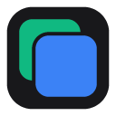

Tabsona — Privacy Policy
Last updated 3 October 2026 · applies to the Tabsona Chrome extension
In one line: everything Tabsona holds stays in your own browser profile. There is no server, no account, no analytics and no sync. Nothing is uploaded, sold or shared.
What the extension stores
Tabsona's job is to keep one browser tab's login separate from another's. To do that it saves, in chrome.storage.local on this device:
- Personas you create — the name and description you type.
- Site addresses you add to a persona.
- Authentication data for those sites — cookies (name, value and attributes) and the
localStorage/sessionStorageentries belonging to a saved session. This is what lets a persona reopen already signed in. - Which tab belongs to which session, and your settings.
It does not read, store or transmit page content, browsing history, form input, keystrokes, or any site you have not explicitly approved.
Where it goes
Nowhere. There is no backend service, no third-party SDK, no crash reporter and no usage analytics in the extension. No network request is made to any server operated by the developer, because there is none. The only network traffic is the browsing you do yourself, to the sites you opened.
Data is not synced across your devices: Tabsona deliberately uses local storage rather than chrome.storage.sync, because saved sessions contain live credentials and those should not travel.
Site access
Tabsona requests access to a website only when you press Allow this site for it, and Chrome then shows you its own confirmation dialog. Until you do that, the extension has no access to the site and cannot isolate it. You can revoke access for any site at any time from chrome://extensions.
Please treat saved sessions as credentials
A saved session is a login. Two consequences worth knowing:
- Extension storage is not encrypted by the browser. Anyone with access to your user account on this machine can read it, exactly as they could read your browser's own cookie jar.
- An export file contains live credentials in plain text. Treat the file like a password file: do not commit it, mail it, or leave it in a shared folder.
Deleting your data
Deleting a session or a persona in the extension removes its stored data immediately. Uninstalling the extension makes Chrome delete all of its storage. Because nothing was ever sent anywhere, there is no copy for anyone to delete on your behalf.
Chrome Web Store limited use
Tabsona's use of information received from Google APIs adheres to the Chrome Web Store User Data Policy, including the Limited Use requirements. Specifically: the data described above is used only to provide the single feature of isolating and restoring logins per tab; it is never sold or transferred to third parties; it is never used for advertising, personalisation or creditworthiness; and no human reads it, because it never leaves the device.
What this extension is not for
Tabsona is a developer tool for testing applications you control. It does not spoof your browser fingerprint and does not route traffic through proxies — every persona shares your real browser identity. It is not built for evading bans or platform rules.
Changes and contact
If this policy changes, the date at the top changes with it and the previous wording stays visible in the repository's history. Questions, or a privacy concern: open an issue at github.com/khanakia/tabsona/issues, or email khanakia@gmail.com.